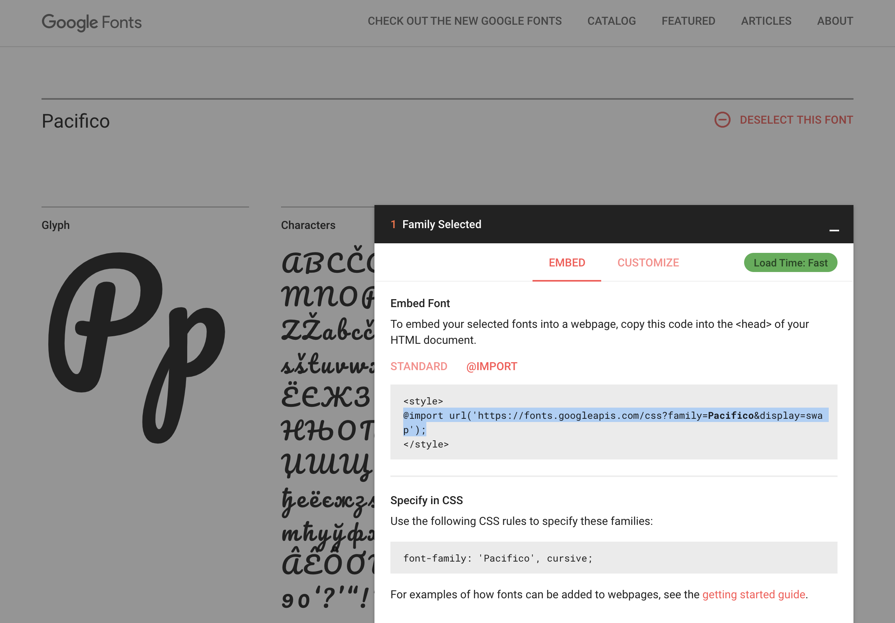
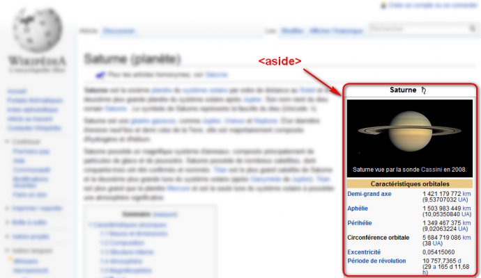
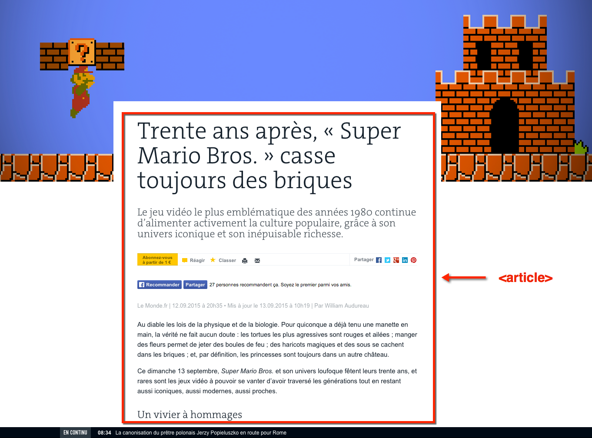
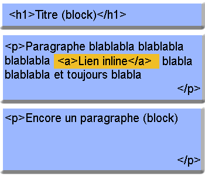
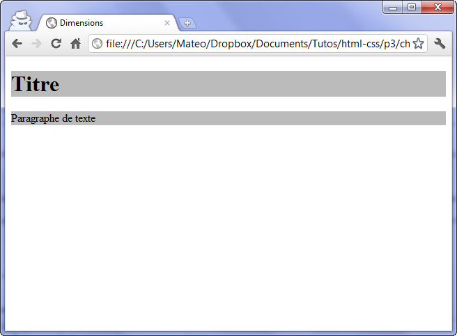
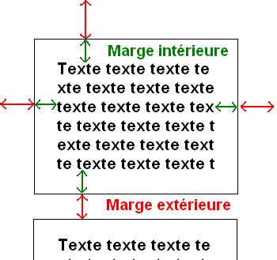
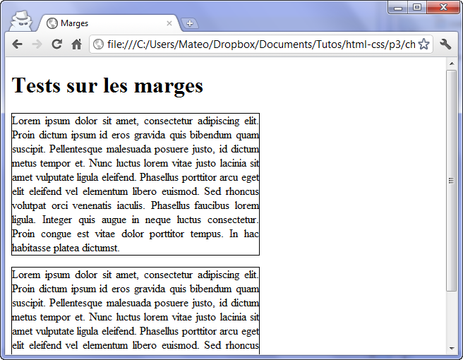

Rappel
Nous étudions dans ce cours les deux langages de programmation à la base de tous les sites web : HTML et CSS.
Les navigateurs web (Chrome, Firefox, Opéra, Safari, Edge, et d'autres) traduisent les codes HTML et CSS en ce que vous voyez à l'écran.
Tout ce dont nous avons besoin pour construire un site web c'est :
- un navigateur (je recommande Chrome, pour ces outils de développement);
- un éditeur de texte (je recommande Brackets mais le Bloc-notes suffit).
Lorsque vous ouvrez un fichier HTML (extension .html) dans un éditeur de texte, vous pouvez voir et modifier le code ; quand vous ouvrez ce même fichier dans votre navigateur, vous voyez le résultat visuel.
Le rôle de HTML et de CSS
- HTML(HyperText Markup Language) : fait son apparition dès 1991 lors du lancement du Web. Son rôle est de gérer et organiser le contenu. C'est donc en HTML que vous écrirez ce qui doit être affiché sur la page : du texte, des liens, des images… Vous direz par exemple : "Ceci est mon titre, ceci est mon menu, voici le texte principal de la page, voici une image à afficher, etc.".
- CSS(Cascading Style Sheets, aussi appelées Feuilles de style) : le rôle du CSS est de gérer l'apparence de la page web (agencement, positionnement, décoration, couleurs, taille du texte…). Ce langage est venu compléter le HTML en 1996.
HTML
Le rôle de ce langage est de gérer et organiser le contenu. Il s'écrit dans des documents avec l'extension .html.
Grammaire HTML
Un élément HTML s'écrit sous la forme d'une balise. La syntaxe générique est la suivante :
<balise attribut="valeur">Contenu de l'élément</balise>
Les éléments HTML n'ayant' pas de contenu peuvent être écrits sous la forme d'une balise orpheline :
<balise/>
Un exemple concret de balise paire, un paragraphe :
<p>Ceci est un paragraphe</p>
Un exemple concret de balise orpheline, un retour à la ligne :
<br/>
Un exemple concret de balise orpheline avec attribut, une image :
<img src="adresseImage.jpg" alt="Description de l'image"/>
Les règles qui régissent le langage HTML :
- Tous les éléments doivent être clos
- Les éléments HTML peuvent s’imbriquer
- Les éléments HTML ne doivent pas se chevaucher
- Les balises doivent être fermées dans le sens inverse de leur ouverture.
Vocabulaire HTML
Nous avons déjà vu les éléments HTML suivants :
<p>...</p>: paragraphe<h1>...</h1>: titre de niveau 1<h2>...</h2>: titre de niveau 2- ...
<h6>...</h6>: titre de niveau 6<br/>: saut de ligne<img src="" alt=""/>: image<a href="" target="">...</a>: lien hypertexte<ol><li>...</li></ol>: liste ordonnée (numérotée)<ul><li>...</li></ul>: liste non ordonnée (à puces) En voici quelques autres :<strong>...</strong>: texte très important<em>...</em>: texte important (mise en emphase)
Ces éléments vous permettent d'écrire et de hiérarchiser votre contenu textuel ainsi que les images. Nous verrons plus loin d'autre éléments HTML qui nous permettront de mieux structurer (mettre en page) notre site web.
Retrouvez l'ensemble des éléments HTML disponibles sur le site des développeurs Mozilla.
Bien démarrer
La page d'accueil d'un site se nomme index.html.
Prenez l'habitude de bien structurer vos fichiers. Je vous encourage, pour chaque site que vous créez, de créer un nouveau répertoire (dossier) portant le nom du site. Dans ce répertoire, placer le fichier index.html, un répertoire pages pour les autres pages du site (fichiers .html) , un répertoire img pour les images et un répertoire css qui contiendra vos feuilles de style (fichiers .css).
Pour que votre page web soit valide, elle doit comporter un certain nombre d'éléments obligatoires (cf. Structure globale d'un document HTML5).
On doit d'abord définir le doctype(type de document) et place l'élément racine <html>. Cet élément contient les éléments <head>et <body>. L'élément <head>(en-tête html) contient au minimum les éléments <title> - qui permet de définir le titre de la page affiché dans les moteur de recherche et l'onglet du navigateur - et <meta> avec son attribut charset - qui permet de définir l'encode des caractères. De manière générale, optez pour UTF-8.
Structure HTML minimale :
<!doctype html>
<html>
<head>
<meta charset="utf-8">
<title>Titre de la page</title>
</head>
<body>
<!-- Le contenu de votre site -->
</body>
</html>
CSS - Feuille de styles
Le rôle de ce langage est de gérer l'apparence de la page web (agencement, positionnement, décoration, couleurs, taille du texte…). Il s'écrit dans des documents avec l'extension .css. Un fichier CSS est également appelé une feuille de styles.
Grammaire CSS
La syntaxe générique d'une déclaration CSS est la suivante :
selecteur{
propriéte:valeur;
}
Un exemple concret de déclaration CSS. Tous les paragraphes en rouge :
p{
color:red;
}
Il est possible de définir plusieurs propriétés pour un même sélecteur. Exemple, tous les paragraphe en rouge, en taille 14pt et en gras :
p{
color:red;
font-size:14pt;
font-weigt:bold;
}
Nous allons bien sûr pouvoir faire plusieurs déclarations au sein d'une même feuille de style (d'un même fichier .CSS). Schématiquement, une feuille de style CSS ressemble donc à cela :
selecteur1{
propriété1:valeur1;
propriété2:valeur2;
}
selecteur2{
propriété1:valeur1;
propriété2:valeur2;
propriété3:valeur3;
}
selecteur3{
propriété1:valeur1;
}
Vocabulaire CSS
Il existe des centaines de propriétés css que l'on peut appliquer à des éléments html. En cours, nous avons déjà évoqué les suivantes :
color: couleur du textefont-size: taille du textetext-align: alignement du textefont-family: police du textebackground-color: couleur d'arrière-plan
Il est impossible de passer en revue toutes les propriétés CSS. De plus, chacune d'elles acceptent des types de valeurs particuliers. Les principales propriétés se trouvent dans les diapos du cours. Pour le reste, je vous encourage à chercher dans la documentation en ligne (ici ou là par exemple) ou passez par les moteurs de recherche.
Bien démarrer
Pour que les styles que définissez à l'intérieur d'une feuille de style (fichier .css), s'applique à une page web (fichier .HTML), il faut lier ces deux fichiers. Cette liaison s'opère dans l'en-tête du fichier HTML (dans l'élément head).
<link rel="stylesheet" href="adresseFeuilleDeStyles.css"/>
Attention
L'adresse relative entre votre fichier HTML et CSS doit correspondre à votre hiérarchie de fichiers.
Dans mon cas, en reprenant la structure de site présentée plus haut, pour appeler le fichier style.css depuis le fichier index.html, je dois entrer dans le dossier CSS puis appeler le fichier style.css.
<link rel="stylesheet" href="css/styles.css"/>
Structure HTML minimale avec appel d'une feuille de style :
<!doctype html>
<html>
<head>
<meta charset="utf-8">
<title>Titre de la page</title>
<link rel="stylesheet" href="css/styles.css"/>
</head>
<body>
<!-- Le contenu de votre site -->
</body>
</html>
Utilisation des web fonts
Je vous rappelle l'intérêt d'utiliser des web fonts lorsque vous définissez des familles de polices à utiliser dans votre site :
- externaliser la police (gain de place sur votre site) ;
- tout utilisateur verra cette police même si elle n'est pas installée sur son ordinateur.
Attention toutefois au temps de chargement qui peut vite augmenter si vous charger trop de police de caractère. Que se soit pour des questions de chargement ou d'esthétisme, ne dépassez pas 3 polices différentes sur un même site. N'hésitez pas, cependant à jouer sur la graisse de la police (propriété css font-weight) et/ou sur l'espacement des caractères (proprité css letter-spacing).
Nous avons utilisé en cours le service Google Fonts. Intégrer la police de votre choix à votre feuille de styles :
- sélectionner une police +
- dans le "panier" (Family selected), choisissez la méthode @import
- copiez la ligne commençant par
@import url( - collez-la au tout début de votre feuille de style CSS
- copiez la propriété css de la partie Specify in CSS commençant par
font-family: - copiez-la, dans votre feuille de style, à l'endroit ou vous souhaitez l'utiliser

Voir aussi
Je vous renvoie également à la partie sur la mise en forme du texte dans ma présentation.
Les couleurs en CSS
Plusieurs propriétés CSS attendent des valeurs de couleur. C'est notamment le cas des propriétés color (couleur du texte) et backgroung-color(couleur d'arrière-plan).
En CSS, il est possible de spécifier les couleurs de 3 manières différentes :
- utiliser les noms des couleurs telles qu'elles sont définies par le W3C
- spécifier les composantes rouge, verte et bleu de la couleur avec
rgb() - spécifier les valeurs RVB en hexadécimal précédé de
#
Petite parenthèse sur la notation hexadécimale
Celle-ci est très répandue sur le Web, notamment en CSS car elle a le mérite d'être plus courte à écrire que la notion décimale RGB et elle permet de spécifier des couleurs qui n'ont pas de noms réservés.
Rappelez-vous, nous avions vu qu'une couleur numérique comprenait 3 composantes (rouge, vert et bleu) chacune codée de 0 à 255 unités de valeur.
En RGB, le rouge pur se note : rgb(255,0,0) → rouge : 255 ; vert : 0 ; bleu : 0
En hexadécimal, une couleur est représentée par 3 paires de caractères qui représentent respectivement l'intensité de rouge, vert et bleu qui sont toujours codées sur 255 valeurs. Sachant qu'en hexadécimal, 0 se note 00 et que 255 se note FF, nous codons donc les couleurs de #000000à #FFFFFF. Les 2 premiers caractères représente la composante rouge, les 2 suivants, la composante verte et les 2 derniers la composante bleue.
En hexa, le rouge pur se note : #FF0000 → rouge : FF = 255 ; vert : 00 = 0 ; bleu : 00 = 0
→ Pour en savoir plus sur le système hexadécimal, je vous renvoie sur cette page Wikipedia
→ Retrouvez d'autres informations sur les couleurs Web sur cette page Wikipedia et sur https://htmlcolorcodes.com/fr/
Ainsi, si je souhaite que tous mes titres (élément <h1>) soient de couleur sarcelle (teal en anglais) je peux l'écrire de 3 manières différentes mais équivalentes :
h1{
color : teal;
}
ou
h1{
color : rgb(0,128,128);
}
ou
h1{
color : #008080;
}
Note
→ Compléments sur les couleurs en css : https://developer.mozilla.org/fr/docs/Web/CSS/Type_color → Je vous renvoie également à la partie sur la couleur dans ma présentation.
Exemples
Retrouvez ici, une structure de site vierge que vous pouvez réutiliser. Retrouvez ici, un site plus complet avec plusieurs pages, du contenu et une feuille de style.
Cette partie est largement inspirée d'Openclassroom - Apprenez à créer votre site web avec HTML5 et CSS3
Revenons un peu à notre page HTML. Nous avons, jusqu'à présent, ajouter des éléments de contenus (titres, paragraphes, images, listes, liens, etc.) à la suite les uns des autres, sans trop nous occuper de la mise en page. En général, une page web est constituée d'un en-tête (tout en haut), de menus de navigation (en haut ou sur les côtés), de différentes sections au centre et d'un pied de page (tout en bas).
Dans ce chapitre, nous allons nous intéresser aux balises HTML dédiées à la structuration du site. Ces balises ont été introduites par HTML5 et vont nous permettre de dire : "Ceci est mon en-tête", "Ceci est mon menu de navigation", "ceci est mon pied de page", etc.
Il nous faut dans un premier temps, avant gérer le positionnement des différentes parties en CSS, structurer notre document HTML.
"Voir aussi
Je vous renvoie à la partie Conteneurs sémentiques dans ma présentation.
Il existe 6 éléments (balises) HTML permettant de structurer un site web :
<header>: en-tête ;<footer>: pied de page ;<nav>: principaux liens de navigation ;<section>: section de page ;<aside>: informations complémentaires ;<article>: article indépendant.
L'en-tête
La plupart des sites web possèdent en général un en-tête (header en anglais). On y trouve le plus souvent un logo, une bannière, le slogan de votre site…
Vous devrez placer ces informations à l'intérieur de la balise<header>:
<header>
<!-- Placez ici le contenu de l'en-tête de votre page -->
</header>
La figure suivante, par exemple, représente le site du W3C (qui se charge des nouvelles versions de HTML et CSS notamment). La partie encadrée en rouge correspondrait à l'en-tête :

L'en-tête peut contenir tout ce que vous voulez : titre, images, liens, textes…
Le pied de page
À l'inverse de l'en-tête, le pied de page <footer> se trouve en général tout en bas du document. On y trouve des informations comme des liens de contact, le nom de l'auteur, les mentions légales, etc.
<footer>
<!-- Placez ici le contenu du pied de page -->
</footer>
La figure suivante vous montre à quoi ressemble le pied de page du W3C.

Principaux liens de navigation
La balise<nav>doit regrouper tous les principaux liens de navigation du site. Vous y placerez par exemple le menu principal de votre site.
Généralement, le menu est réalisé sous forme de liste à puces à l'intérieur de la balise<nav>:
<nav>
<ul>
<li><a href="index.html">Accueil</a></li>
<li><a href="forum.html">Forum</a></li>
<li><a href="contact.html">Contact</a></li>
</ul>
</nav>
Nous verront plus loin comment styliser proprement un menu de navigation.
Voici le menu sur le site du W3C : <nav>

Une section de page
La balise<section>sert à regrouper des contenus en fonction de leur thématique. Elle englobe généralement une portion du contenu au centre de la page.
<section>
<h1>Ma section de page</h1>
<p>Bla bla bla bla</p>
</section>
Sur la page d'accueil du portail Free.fr, on trouve plusieurs blocs qui pourraient être considérés comme des sections de page (figure suivante).

Chaque section peut avoir son titre de niveau 1 (<h1>), de même que l'en-tête peut contenir un titre<h1>lui aussi. Chacun de ces blocs étant indépendant des autres, il n'est pas illogique de retrouver plusieurs titres<h1>dans le code de la page web. On a ainsi "Le titre<h1>du<header>», "Le titre<h1>de cette<section>», etc.
Informations complémentaires
La balise<aside>est conçue pour contenir des informations complémentaires au document que l'on visualise. Ces informations sont généralement placées sur le côté (bien que ce ne soit pas une obligation).
<aside>
<!-- Placez ici des informations complémentaires -->
</aside>
Il peut y avoir plusieurs blocs<aside>dans la page.
Sur Wikipédia, par exemple, il est courant de voir à droite un bloc d'informations complémentaires à l'article que l'on visualise. Ainsi, sur la page présentant la planète Saturne (figure suivante), on trouve dans ce bloc les caractéristiques de la planète (dimensions, masse, etc.).

Un article indépendant
La balise<article>sert à englober une portion généralement autonome de la page. C'est une partie de la page qui pourrait ainsi être reprise sur un autre site. C'est le cas par exemple des actualités (articles de journaux ou de blogs).
<article>
<h1>Mon article</h1>
<p>Bla bla bla bla</p>
</article>
Par exemple, voici un article sur le Monde :

Résumé
Plusieurs balises HTML existe afin de nous aider à délimiter les différentes zones qui constituent une page web :
- <header>: en-tête ;
- <footer>: pied de page ;
- <nav>: principaux liens de navigation ;
- <section>: section de page ;
- <aside>: informations complémentaires ;
- <article>: article indépendant.
Ces balises peuvent être imbriquées les unes dans les autres. Ainsi, une section peut avoir son propre en-tête.
Attention
Ces balises ne s'occupent pas de la mise en page. Elles servent seulement à indiquer à l'ordinateur la sémantique de leur contenu. On pourrait très bien placer l'en-tête en bas de la page si on le souhaite.
Voici un petit schéma (figure suivante) pour vous aider à retenir le rôle de ces balises :

Ne vous y trompez pas : ce schéma propose un_exemple_d'organisation de la page. Rien ne vous empêche de décider que votre menu de navigation soit à droite, ou tout en haut, que vos balises<aside>soient au-dessus, etc.
On peut même imaginer une seconde balise<header>, placée cette fois à l'intérieur d'une<section>. Dans ce cas-là, elle sera considérée comme étant l'en-tête de la section.
Enfin, une section ne doit pas forcément contenir un<article>et des<aside>. Utilisez ces balises uniquement si vous en avez besoin. Rien ne vous interdit de créer des sections contenant seulement des paragraphes, par exemple.
Une autre organisation possible :

Ou encore :

Bref, vous l'aurez compris, tout est possible ! À vous de structurer correctement votre page avec ces éléments en fonction du résultat final attendu.
Exemple
<!DOCTYPE html>
<html>
<head>
<meta charset="utf-8" />
<title>Les carnets de voyages du Dr. Bobo</title>
</head>
<body>
<header>
<h1>Dr. Bobo</h1>
<h2>Carnets de voyage</h2>
</header>
<nav>
<ul>
<li><a href="#">Ljubljana</a></li>
<li><a href="#">Bratislava</a></li>
<li><a href="#">Budapest</a></li>
</ul>
</nav>
<section>
<aside>
<h1>À propos de l'auteur</h1>
<p>Je suis le docteur Bobo</p>
</aside>
<article>
<h1>Je suis un grand voyageur</h1>
<p>Bla bla bla bla (texte de l'article)</p>
</article>
</section>
<footer>
<p>Copyright Dr. Bobo - Tous droits réservés<br />
<a href="#">Me contacter !</a></p>
</footer>
</body>
</html>
Ce code peut vous aider à comprendre comment les balises doivent être agencées. Vous y reconnaissez un en-tête, un menu de navigation, un pied de page… et, au centre, une section avec un article et un bloc<aside>donnant des informations sur l'auteur de l'article.
Si vous testez le résultat, vous verrez juste du texte noir sur fond blanc. C'est normal, il n'y a pas de CSS ! Par contre, la page est bien structurée, ce qui va nous être utile pour la suite.
Encore une fois ces balises sont seulement là pour expliquer à l'ordinateur "Ceci est l'en-tête", "Ceci est mon pied de page", etc. Elles n'indiquent pas, contrairement à ce qu'on pourrait penser, où doit être placé le contenu. C'est le rôle du CSS.
À vous de jouer
Reprenez le site débuter en cours ; ou téléchargez cette base.
Structurez-le avec les balises structurantes HTML (<header>, <section>, <nav>, etc.).
Le modèle de boîtes
Cette partie est quasi-intégralement reprise de l'excellent cours de Mathieu Nebra sur Openclassroom : Apprenez à créer votre site web avec HTML5 et CSS3
Une page web peut être vue comme une succession et un empilement de boîtes, qu'on appelle "blocs". La plupart des éléments vus au chapitre précédent sont des blocs : <header>, <article>, <nav>, etc. Mais nous connaissions déjà d'autres blocs : les paragraphes<p>, les titres<h1>, etc.
Dans ce chapitre, nous allons apprendre à manipuler ces blocs comme de véritables boîtes. Nous allons leur donner des dimensions, les agencer en jouant sur leurs marges, mais aussi apprendre à gérer leur contenu… pour éviter que le texte ne dépasse de ces blocs !
Ce sont des notions fondamentales dont nous allons avoir besoin pour mettre en page notre site web.
Les balises de type block et inline
En HTML, la plupart des balises peuvent se ranger dans l'une ou l'autre de deux catégories :
- Les balisesinline: c'est le cas par exemple des liens
<a></a> - Les balisesblock: c'est le cas par exemple des paragraphes
<p></p>.
Il existe en fait plusieurs autres catégories très spécifiques, par exemple pour les cellules de tableau (typetable-cell) ou les puces (typelist-item). Nous n'allons pas nous y intéresser pour le moment car ces balises sont minoritaires.
Mais comment reconnaître une balise inline d'une balise block ?
C'est en fait assez facile :
- block: une balise de type block sur votre page web crée automatiquement un retour à la ligne avant et après. Il suffit d'imaginer tout simplement un bloc. Votre page web sera en fait constituée d'une série de blocs les uns à la suite des autres. Mais vous verrez qu'en plus, il est possible de mettre un bloc à l'intérieur d'un autre, ce qui va augmenter considérablement nos possibilités pour créer le design de notre site !
- inline: une balise de type inline se trouve obligatoirement à l'intérieur d'une balise block. Une balise inline ne crée pas de retour à la ligne, le texte qui se trouve à l'intérieur s'écrit donc à la suite du texte précédent, sur la même ligne (c'est pour cela que l'on parle de balise "en ligne").
Depuis HTML5, la catégorisation des différents éléments est un peu plus complexe que cela. Cependant, cette petite simplification va vous permettre de bien comprendre la différence entre le concept de "bloc" et le concept de "en ligne".
Pour bien visualiser le concept, voici un petit schéma :

- Sur fond bleu, vous avez tout ce qui est de type block.
- Sur fond jaune, vous avez tout ce qui est de type inline.
Comme vous pouvez le voir, les blocs sont les uns en-dessous des autres. On peut aussi les imbriquer les uns à l'intérieur des autres.
La balise inline<a></a>, elle, se trouve à l'intérieur d'une balise block et le texte vient s'insérer sur la même ligne.
Si vous voulez avoir la liste complète des balises qui existent et savoir si elles sont de type inline ou block, reportez-vous à l'annexe donnant la liste des balises HTML.
Les balises universelles
Vous les connaissez déjà car je vous les ai présentées il y a quelques chapitres. Ce sont des balises qui n'ont aucun sens particulier (contrairement à<p>qui veut dire "paragraphe",<strong>"important", etc.).
Le principal intérêt de ces balises est que l'on peut leur appliquer uneclass pour le CSS quand aucune autre balise ne convient.
Il existe deux balises génériques et, comme par hasard, la seule différence entre les deux est que l'une d'elle est inline et l'autre est block :
<span></span>(inline) ;<div></div>(block).
Respectez la sémantique !
Les balises universelles sont "pratiques" dans certains cas, certes, mais attention à ne pas en abuser. Je tiens à vous avertir de suite : beaucoup de webmasters mettent des<div>et des<span>trop souvent et oublient que d'autres balises plus adaptées existent.
Exemples
- Exemple d'un span inutile:
<span class="important">. Je ne devrais jamais voir ceci dans un de vos codes alors qu'il existe la balise<strong>qui sert à indiquer l'importance ! - Exemple d'un div inutile:
<div class="titre">. Ceci est complètement absurde puisqu'il existe des balises faites spécialement pour les titres (<h1>,<h2>…).
Vous allez me dire qu'au final le résultat (visuel) est le même. Je suis tout à fait d'accord. Mais les balises génériques n'apportent aucun sens à la page et ne peuvent pas être comprises par l'ordinateur. Utilisez toujours d'autres balises plus adaptées quand c'est possible. Google lui-même le conseille pour vous aider à améliorer la position de vos pages au sein de ses résultats de recherche !
Les dimensions
Nous allons ici travailler uniquement sur des balises de type block.
Pour commencer, intéressons-nous à la taille des blocs. Contrairement à un inline, un bloc a des dimensions précises. Il possède une largeur et une hauteur. Ce qui fait, ô surprise, qu'on dispose de deux propriétés CSS :
width: c'est la largeur du bloc. À exprimer en pixels (px) ou en pourcentage (%).height: c'est la hauteur du bloc. Là encore, on l'exprime soit en pixels (px), soit en pourcentage (%).
Pour être exact,widthetheightreprésentent la largeur et la hauteur du contenu des blocs. Si le bloc a des marges (on va découvrir ce principe un peu plus loin), celles-ci s'ajouteront à la largeur et la hauteur.
Par défaut, un bloc prend 100% de la largeur disponible. On peut le vérifier en appliquant à nos blocs des bordures ou une couleur de fond (figure suivante).

Maintenant, rajoutons un peu de CSS afin de modifier la largeur des paragraphes. Le CSS suivant dit : « Je veux que tous mes paragraphes aient une largeur de 50% ».
p
{
width: 50%;
}
Le résultat est visible à la figure suivante :

Les pourcentages seront utiles pour créer un design qui s'adapte automatiquement à la résolution d'écran du visiteur.
Toutefois, il se peut que vous ayez besoin de créer des blocs ayant une dimension précise en pixels :
p
{
width: 250px;
}
Minimum et maximum
On peut demander à ce qu'un bloc ait des dimensions minimales et maximales. C'est très pratique car cela nous permet de définir des dimensions « limites » pour que notre site s'adapte aux différentes résolutions d'écran de nos visiteurs :
min-width: largeur minimale ;min-height: hauteur minimale ;max-width: largeur maximale ;max-height: hauteur maximale.
Par exemple, on peut demander à ce que les paragraphes occupent 50% de la largeur_et_exiger qu'il fassent au moins 400 pixels de large dans tous les cas :
p
{
width: 50%;
min-width: 400px;
}
Observez le résultat en modifiant la largeur de la fenêtre de votre navigateur. Vous allez voir que, si celle-ci est trop petite, le paragraphe se force à occuper au moins 400 pixels de largeur.
Les bordures
Le CSS vous offre un large choix de bordures pour décorer votre page. De nombreuses propriétés CSS vous permettent de modifier l'apparence de vos bordures :border-width, border-color, border-style, etc.
Voir
→ Je vous renvoie vers la partie bordures des éléments dans ma présentation
La propriétéborder-radiusva nous permettre d'arrondir facilement les angles de n'importe quel élément. Il suffit d'indiquer la taille (« l'importance ») de l'arrondi en pixels :
p{
border-radius:10px
}
Les marges
Il faut savoir que tous les blocs possèdent des marges. Il existe deux types de marges :
- les marges intérieures ;
- les marges extérieures.
Regardez bien le schéma qui se trouve à la figure suivante.

Sur ce bloc, j'ai mis une bordure pour qu'on repère mieux ses frontières.
- L'espace entre le texte et la bordure est la marge intérieure (en vert).
- L'espace entre la bordure et le bloc suivant est la marge extérieure (en rouge).
En CSS, on peut modifier la taille des marges avec les deux propriétés suivantes :
padding: indique la taille de la marge intérieure. À exprimer en général en pixels (px).margin: indique la taille de la marge extérieure. Là encore, on utilise le plus souvent des pixels.
Les balises de type inline possèdent également des marges. Vous pouvez donc aussi essayer ces manipulations sur ce type de balises.
Pour bien voir les marges, prenons deux paragraphes auxquels j'applique simplement une petite bordure (figure suivante) :
p
{
width: 350px;
border: 1px solid black;
text-align: justify;
}

Comme vous pouvez le constater, il n'y a par défaut pas de marge intérieure (padding). En revanche, il y a une marge extérieure (margin). C'est cette marge qui fait que deux paragraphes ne sont pas collés et qu'on a l'impression de « sauter une ligne ».
Les marges par défaut ne sont pas les mêmes pour toutes les balises de type block. Essayez d'appliquer ce CSS à des balises<div>qui contiennent du texte, par exemple : vous verrez que, dans ce cas, il n'y a par défaut ni marge intérieure, ni marge extérieure !
Supposons que je veuille rajouter une marge intérieure de 12 px aux paragraphes (figure suivante) :
p
{
width: 350px;
border: 1px solid black;
text-align: justify;
padding: 12px; /* Marge intérieure de 12px */
}

Maintenant, je veux que mes paragraphes soient plus espacés entre eux. Je rajoute la propriétémarginpour demander à ce qu'il y ait 50 px de marge entre deux paragraphes (figure suivante) :
p
{
width: 350px;
border: 1px solid black;
text-align: justify;
padding: 12px;
margin: 50px; /* Marge extérieure de 50px */
}

Notez quemargin(commepaddingd'ailleurs) s'applique aux quatre côtés du bloc.
Si vous voulez spécifier des marges différentes en haut, en bas, à gauche et à droite, il va falloir utiliser des propriétés plus précises.
En haut, à droite, en bas, à gauche, … Et on recommence !
L'idéal serait que vous reteniez les termes suivants en anglais :
- top: haut ;
- bottom: bas ;
- left: gauche ;
- right: droite.
Ainsi, vous pouvez retrouver toutes les propriétés de tête.
Je vais quand même vous faire la liste des propriétés pourmarginetpadding, histoire que vous soyez sûrs que vous avez compris le principe.
Voici la liste pourmargin:
margin-top: marge extérieure en haut ;margin-bottom: marge extérieure en bas ;margin-left: marge extérieure à gauche ;margin-right: marge extérieure à droite.
Et la liste pourpadding:
padding-top: marge intérieure en haut ;padding-bottom: marge intérieure en bas ;padding-left: marge intérieure à gauche ;padding-right: marge intérieure à droite.
Il y a d'autres façons de spécifier les marges avec les propriétésmarginetpadding. Par exemple :
margin: 2px 0 3px 1px;signifie "2 px de marge en haut, 0 px à droite (le px est facultatif dans ce cas), 3 px en bas, 1 px à gauche".
Autre notation raccourcie :margin: 2px 1px;signifie "2 px de marge en haut et en bas, 1 px de marge à gauche et à droite".
Voir aussi
→ Je vous renvoie également à la partie marge des éléments dans ma présentation
En résumé
On distingue deux principaux types de balises en HTML :
- Le type block (
<p>,<h1>…) : ces balises créent un retour à la ligne et occupent par défaut toute la largeur disponible. Elles se suivent de haut en bas. - Le type inline (
<a>,<strong>…) : ces balises délimitent du texte au milieu d'une ligne. Elles se suivent de gauche à droite. - On peut modifier la taille d'une balise de type block avec les propriétés CSS
width(largeur) etheight(hauteur). - On peut définir des minima et maxima autorisés pour la largeur et la hauteur :
min-width,max-width,min-height,max-height. - Les éléments de la page disposent chacun de marges intérieures (
padding) et extérieures (margin).
À vous de jouer
- Reprenez le site débuter en cours ; ou téléchargez cette base.
- En CSS, en jouant avec les propriétés de taille et de marge, limitez la largeur du contenu de votre page ou d'une partie de votre page (la
<section>principale par exemple).
HTML et CSS en pratique
Comment fait-on un bouton ?
Finalement, un bouton, c'est quoi ? C'est tout simplement un lien hypertexte qui a une forme particulière et qui peut changer d'état en fonction de l'action de la souris (survol, clic, ...).
<a href="#">Cliquez ici</a>
a {
color:#FFFFFF; /*Texte blanc*/
background-color : red; /*Fond rouge*/
padding : 10px; /*Marge intérieure de 10px*/
}
Si l'on se contente du sélecteur a, tous les liens hypertextes de ma page web prendront ce style. C'est n'es pas forcément très judicieux car certains éléments <a> de mon site doivent rester des liens hypertextes classiques.
La bonne méthode est de créer une classe (appelons-la btn pour "bouton").
- En HTML nous donnerons cette classe
btnaux liens qui doivent être des boutons. - En CSS nous définirons les styles pour les élément
aayant la classebtn.
Comme ceci :
<a href="#" class="btn">Cliquez ici</a>
a.btn { /*Tous les liens (<a>) ayant la classe "btn"*/
color:#FFFFFF; /*Texte blanc*/
background-color : blue; /*Fond bleu*/
padding : 10px; /*Marge intérieure de 10px*/
}
Allons plus loin. En CSS, nous allons pouvoir ajouter des pseudo-classes qui vont nous permettre de spécifier l'apparence d'un élément en fonction de l'action de la souris.
Ainsi, la pseudo-classe :hover permet de spécifier l'apparence d'un élément au moment où l'utilisateur le survole avec le pointeur, sans nécessairement l'activer.
La pseudo-class :active permet de spécifier l'apparence d'un élément au moment où l'utilisateur clique dessus.
Il existe d'autres pseudo-classes : :link, :visited, focus... Je laisse le loin à ceux qui souhaite aller plus loin de les découvrir par vous même.
En pratique,
<a href="#" class="btn">Cliquez ici</a>
a.btn { /* Affichage par défaut */
color:#FFFFFF; /*Texte blanc*/
background-color : blue; /*Fond bleu*/
padding : 10px; /*Marge intérieure de 10px*/
}
a.btn:hover { /* Au survol */
background-color : red; /*Fond bleu*/
}
a.btn:active { /* Au clic */
color:red; /*Texte rouge */
background-color : #FFFFFF; /*Fond blanc*/
}
À vous de jouer
- Reprenez votre site.
- Dans chaque page HTML, ajouter un bouton (élément
<a>avec la classebtn) renvoyant vers Wikipédia. - Dans le fichier CSS définissez les styles pour la classe
btn. Pensez à utiliser les pseudo-classes" pour modifier le style du bouton en fonction de l'action de la souris.
Comment fait-on un menu de navigation ?
La bonne pratique est de créer un liste non-ordonnées (<ul>) de liens hypertexte (<a>) en HTML puis de la stylisez en CSS pour "casser" notamment l'aspect par défaut d'un liste (sens vertical, puce pour chaque item, ...). N'oublions pas de dire qu'il s'agit du menu de navigation principal grace à la balise <nav>.
En pratique,
<nav>
<ul>
<li><a href="#">Element 1</a></li>
<li><a href="#">Element 2</a></li>
<li><a href="#">Element 3</a></li>
<ul>
</nav>
D'abord, on redéfinit l'aspect de la liste (plus d'indentation, plus de puce) :
nav ul{ /* éléments <ul> qui sont dans un élément <nav> */
padding:0; /* pas de marge intérieure */
margin:0; /* pas de marge extérieure */
list-style-type:none; /* pas de puce */
}
Pour un menu horizontal, on modifie le comportement par défaut des éléments li. Par défaut, ces éléments sont de type block, donc les uns en dessous des autres. On va modifier leur type en inline-block grâce à la propriété display. Il apparaîtront donc les uns à coté des autres.
nav li{ /* éléments <li> qui sont dans un élément <nav> */
display:inline-block;
}
Ensuite, ce n'est qu'une question d’esthétisme. On modifie les couleurs la taille, les marges, l'alignement des items. On réutilise les pseudo-classes vues dans "Comment fait-on un bouton ?" pour modifier l'aspect des éléments au survol de la souris.
Le code entier :
<nav>
<ul>
<li><a href="#">Élément 1</a></li>
<li><a href="#">Élément 2</a></li>
<li><a href="#">Élément 3</a></li>
</ul>
</nav>
nav ul{ /* éléments <ul> qui sont dans un élément <nav> */
padding:0; /* pas de marge intérieure */
margin:0; /* pas de marge extérieure */
list-style-type:none; /* pas de puce */
background-color:#333333; /* fond gris foncé */
}
nav li{ /* éléments <li> qui sont dans un élément <nav> */
display:inline-block; /* passage à l'horizontale */
width :100px; /* chaque élément fait 100px;*/
height:40px; /* hauteur 40px; */
text-align:center; /* texte centré horizontalement */
line-height:40px; /* texte centré verticalement (même nombre que la propriété height) */
padding:0px; /* pas de marge interne */
margin:0px; /* pas de marge externe */
}
nav li a{ /*éléments <a> qui sont dans un élément <li> qui est lui-même dans un élément <nav> */
display:block; /* pour que la zone cliquable prenne toute la taille de l'élément li */
text-decoration:none; /* pas de soulignement */
color:white; /* texte en blanc */
}
nav li:hover{ /* au survol d'un élément <li>*/
background-color:#666666; /* fond gris clair */
}
À vous de jouer
- Reprenez votre site.
- Dans chaque page HTML, ajouter un menu permettant de naviguer entre les différentes pages de votre site ; si ce n'est déjà fait ;) .
- Dans le fichier CSS définissez les styles pour ce menu. Pensez à utiliser les pseudo-classes" pour modifier le style des éléments du menu en fonction de l'action de la souris.
Ressources utiles :
Apprendre ou réviser :
- Openclassroom - Apprenez à créer votre site web avec HTML5 et CSS3
- W3 School - Learn HTML
- W3 School - Learn CSS
Retrouver les balises HTML et les propriétés CSS
- W3 School - HTML reference
- W3 School - CSS référence
- Openclassroom - Mémento des balises HTML
- Openclassroom - Mémento des propriétés CSS